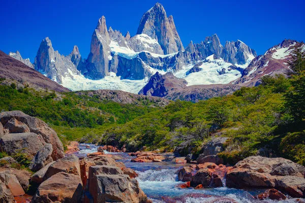
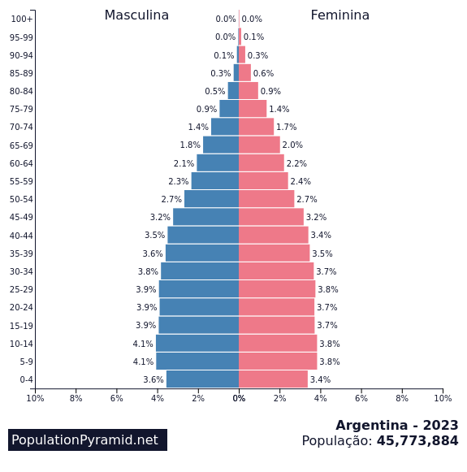

Argentina
Aluno: Lucas Ledur
Escola: Dimensão
Prof: Bia

Historia
Argentina é um país da América do Sul que sofreu com a colonização espanhola e conquistou sua independência em 1816. A região que hoje corresponde à Argentina era habitada por querandis, quíchuas, charruas e guaranis até a chegada dos conquistadores espanhóis em 1516, liderados por Juan Díaz de Solís.
Economia
A economia da Argentina é a segunda mais forte da América do Sul. Assim, o país é um dos membros do Grupo dos 20, fórum que reúne os 20 países economicamente mais influentes. A indústria é o maior setor econômico e o turismo, sem dúvida, é uma das principais atividades do país. O país é um bom exportador e tem uma agricultura bastante desenvolvida em virtude da fertilidade do seu solo. Grande parte dos produtos exportados pelos argentinos são agrícolas.
Vegetação
A vegetação é composta por florestas subtropicais, áreas de savanas e os famosos pampas, que são áreas de planície formadas por vegetação de gramíneas. Além dessas coberturas vegetais, o tipo desértico também é encontrado na porção sul do país.
Clima
O clima da Argentina varia de polar, no extremo sul do país, ao subtropical, no norte do país, com importantes porções de clima temperado. A vegetação segue a mesma lógica da distribuição climática, com coberturas vegetacionais de pampas, florestas temperadas e tundras.

Religiões
O cristianismo é predominante entre os argentinos: 92% (católicos 89%, protestantes 2%, outros 1%). A população que não possui religião corresponde a 3%; o ateísmo representa 1%, outras religiões (principalmente o judaísmo) são seguidas por 4% dos argentinos.
Piramide Etária
Bloco Econômico
O Mercado Comum do Sul, conhecido como Mercosul, é um bloco econômico sul-americano formado pelo Brasil, Argentina, Uruguai, Paraguai e outros países associados e observadores.

Capital
Buenos Aires é a capital cosmopolita da Argentina. Seu centro é a Praça de Maio, com imponentes edifícios do século 19, como a Casa Rosada, o emblemático palácio presidencial com sacadas. Outras importantes atrações são o Teatro Colón, uma casa de ópera inaugurada em 1908 com cerca de 2.500 lugares, e o moderno museu MALBA, com sua coleção de arte latino-americana.